The Data community is great for seeing all sorts of artistic and informative displays of information. One such display I see fairly often is in the form of small multiples or tile maps.
Here I will show you how I created one that shows small multiples of pie charts in the layout of the U.S. states.
I know I have touched base on pie charts before and how they aren’t really ideal for data visualization. However, I really don’t want to rule them out completely. There are many opinions on this, and I think at this time I am in the camp of “it depends.”
In the tutorial below, I’ll show you that I used pie charts to highlight just ONE aspect of a proportion. It seemed to really bring out some insights that some people didn’t even notice initially. But first, a little context.
Context on the Data
For this week’s #MakeoverMonday practice, I looked at car insurance rates across the U.S. There is a minimum car insurance rate and a full/comprehensive coverage amount. Many people who participated in this exercise were able to see that Michigan has really high costs because of it’s “unique requirement of no-limit personal injury protection.”
But what is the deal with Florida? The pie chart tile map I created for this exercise showed me that the state’s minimum car insurance cost makes up a whopping 76.11% of its full coverage cost. Quick screenshot below for reference. Here’s the reasoning why if you are interested.
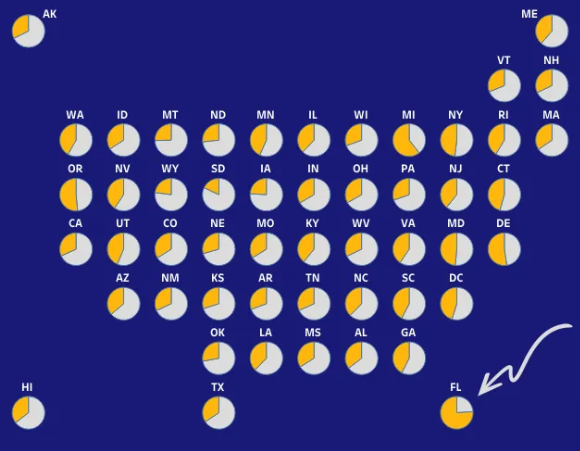
And now for a tutorial.
Tutorial
The layout for the tile map was based on a template that Brittany Fongcreated, so right away I’d say to get a hold of that template. I had a bit of a hard time downloading the exact template file, so I ended up locating one of the data vizzes on Brittany Fong’s Tableau public profile and downloading the “data source” which was the template.
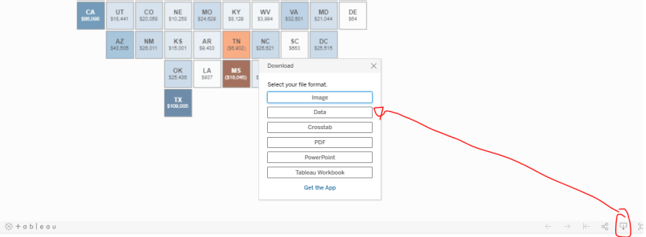
After that, I connected both that template and my actual data file to Tableau Public.
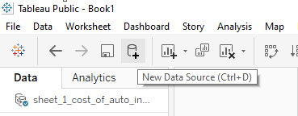
As mentioned in multiple other kinds of small multiples tutorials, we’ll need to edit blend relationships. What this will do is tell Tableau how to relate these two data sources. In this case, we want it to understand that State in one data source will be referring to Abbreviation in the other data source.
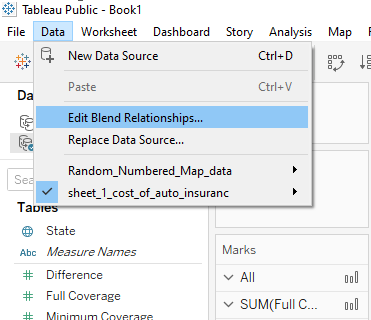
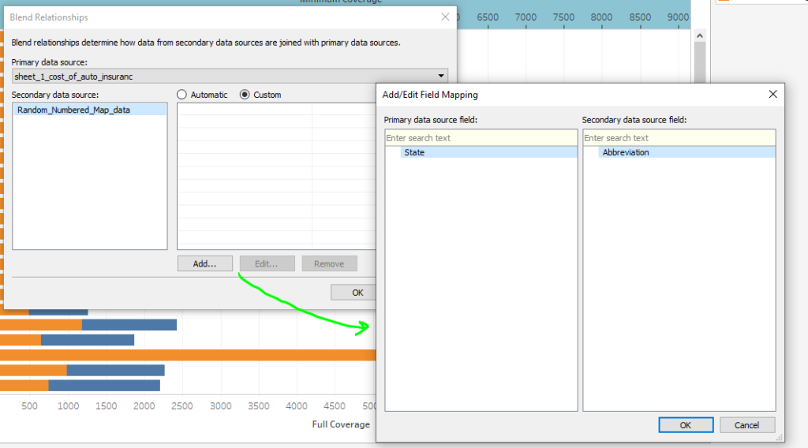
From here you can see that I placed the Row field from that template data source on the rows shelf and the Space field on the columns shelf. I also made the marks card display a Pie with Measure Values (difference & minimum coverage) as the “angle” slices.
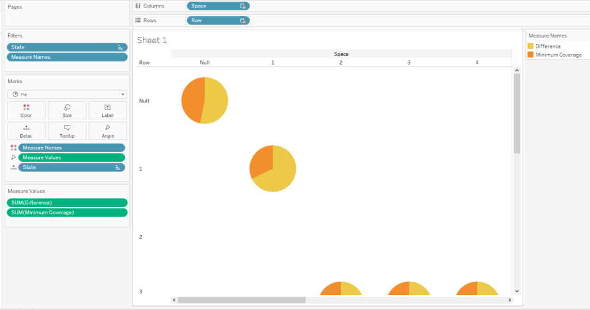
At first the layout did not work for me at all and I was so confused as to why. Then I saw that the “template” I downloaded had “abbreviations” of states but not the state names. My data source had only state names. So in this case, I right clicked on that data field and created aliases. In a different situation, maybe I would have done something differently, but this is just what I did here because I was desperate while troubleshooting to keep things moving.
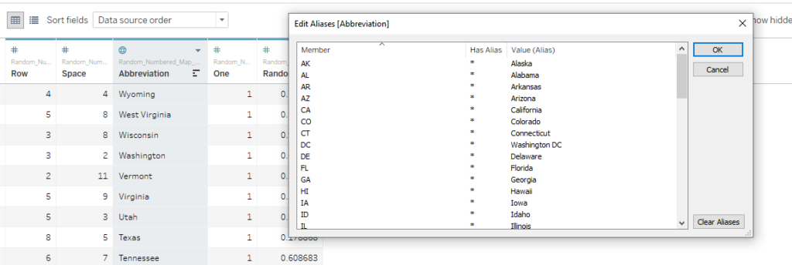
Note that the aliases need to match EXACTLY for this to work. At that point, Tableau understood what was going on from the blending relationships because I made sure the aliases matched the field in the other data source.
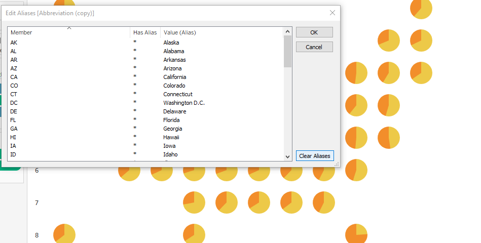
From there I explored many formatting options because they are endless in Tableau. One of my challenges in formatting the tool tips was that I wanted it to show percentages of minimum insurance rates per pie chart. Usually, what I see it doing by default though is the percentage of all the data in the workbook. That’s not what I wanted here.
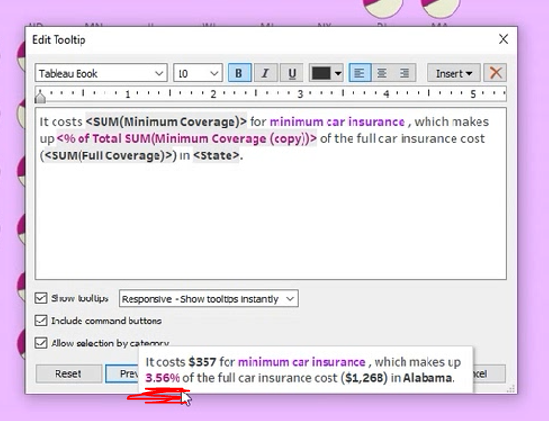
What I ended up doing was creating a calculated field and formatting it as a percentage once placed on the details of the Marks card instead. This would allow me to put the calculated field in the tool tip for a percentage instead of the % of Total Sum (minimum coverage) that was there previously.
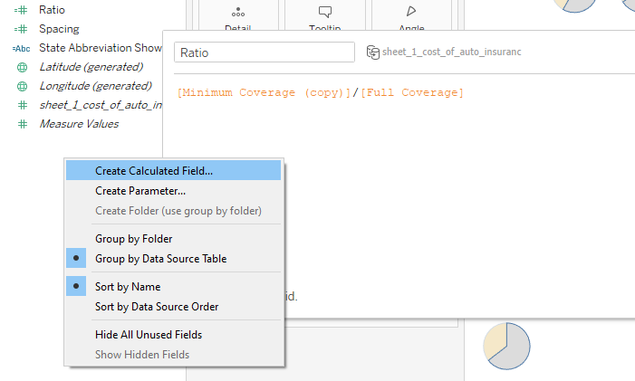
The Final Data Viz
Here’s what I came up with for my “final” data visualization. And here’s the interactive data visualization.I was able to find the font used in the movie Cars to add as a title. I generated the text title at fontmeme.com, saved it as an image, and placed it in Tableau using the dashboard tools.
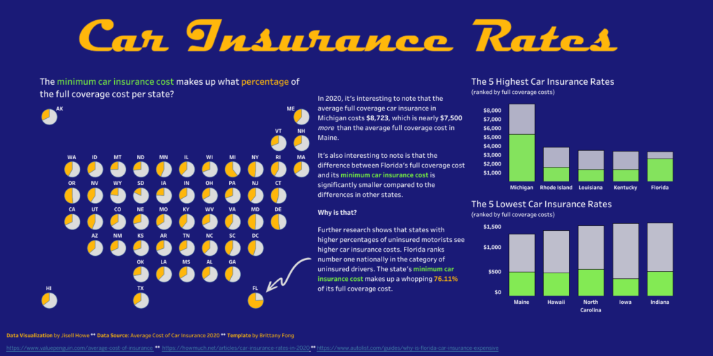
Notice that throughout many of my tutorials, I often change the colors and other formatting things throughout. That’s because there is a lot that can go into the look and feel of a data visualization.
Firstly, you can use color to highlight your insights. This is why I think I got the pie charts to work well in this scenario. I used color to highlight ONE piece of the pie. Not color for every piece ever.
Secondly, there are accessibility reasons to consider color (and contrast) differently. There are Chrome add-ins that let you view how your data visualization would look to someone who experiences a form of colorblindness. Here are two that I use:
It’s really useful in seeing how your color choices may look to someone else. You may think your colorful rainbow data viz looks awesome, but you risk losing your audience if they can’t clearly see what you’re trying to show. That’s an unfortunate place to be for all involved.
But you don’t have to take my word for it. See for yourself!